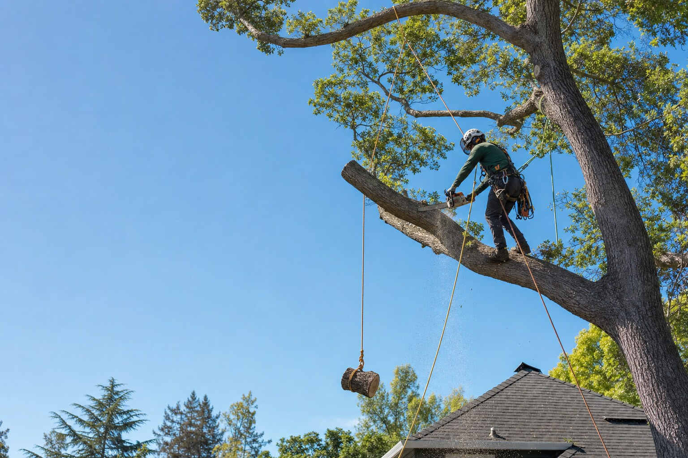

Tree Pruning & Trimming
Good pruning is the single best investment in a tree's long-term health and safety. Bad pruning — topping, lion-tailing, over-thinning — does lasting damage. We prune to industry standards, not shortcuts.
Pruning shapes how a tree grows for decades. Done well, it improves structure, reduces failure risk, clears buildings and lines, and lets in light. Done poorly, it invites decay and weak regrowth.
We follow accepted arboricultural practice (ANSI A300-style approaches): the right cuts, in the right places, at the right dose for the species and season.
Pruning we commonly perform
Structural pruning
Guides young and mid-age trees toward strong form — a dominant leader and well-spaced branches — to prevent problems later.
Crown cleaning
Removes dead, dying, diseased, and crossing branches to improve health and reduce hazards.
Crown thinning & raising
Selective thinning for light and air; raising to clear walkways, driveways, and roofs.
Clearance pruning
Pulls growth back from structures, sightlines, and lower-voltage service lines (utility high-voltage work stays with the utility).
What we won't do
Tree Pruning & Trimming services
For specific goals, these focused services often apply:
Crown Reduction
When a tree has simply gotten too big for its space, crown reduction lowers its height or spread — the right way, with proper reduction cuts back to living laterals.
Explore crown reductionShrub & Hedge Trimming
Crisp hedges and well-kept shrubs frame a property. We shape and maintain them for form and health — not just a quick buzz-cut that leaves bare, woody interiors.
Explore shrub & hedge trimmingFrequently asked questions
Straight answers about tree pruning & trimming. Have a different question? Just ask when you request an estimate.
Serving the Bay Area
From the South Valley through the Peninsula — pick your city for local details.
Let's take care of your trees
Free estimates, honest recommendations, and careful work across the Bay Area.